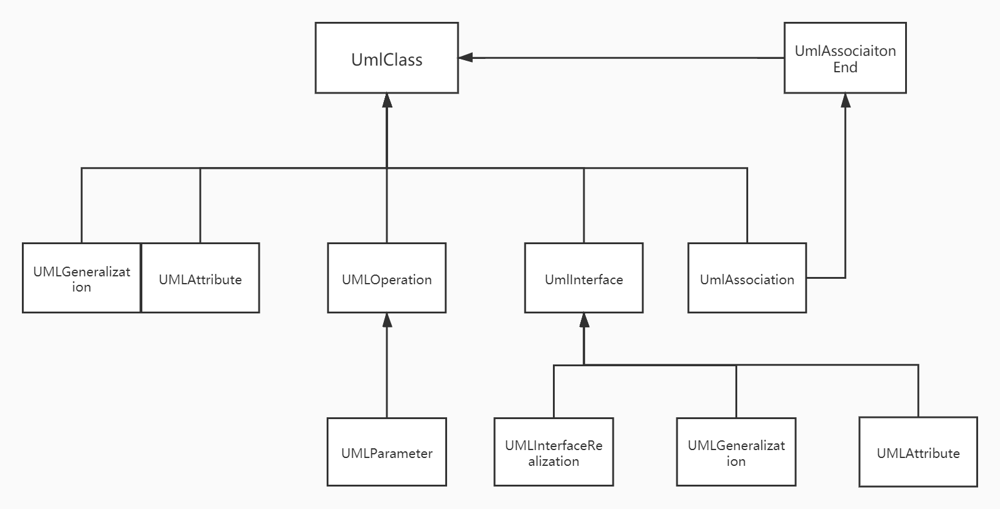
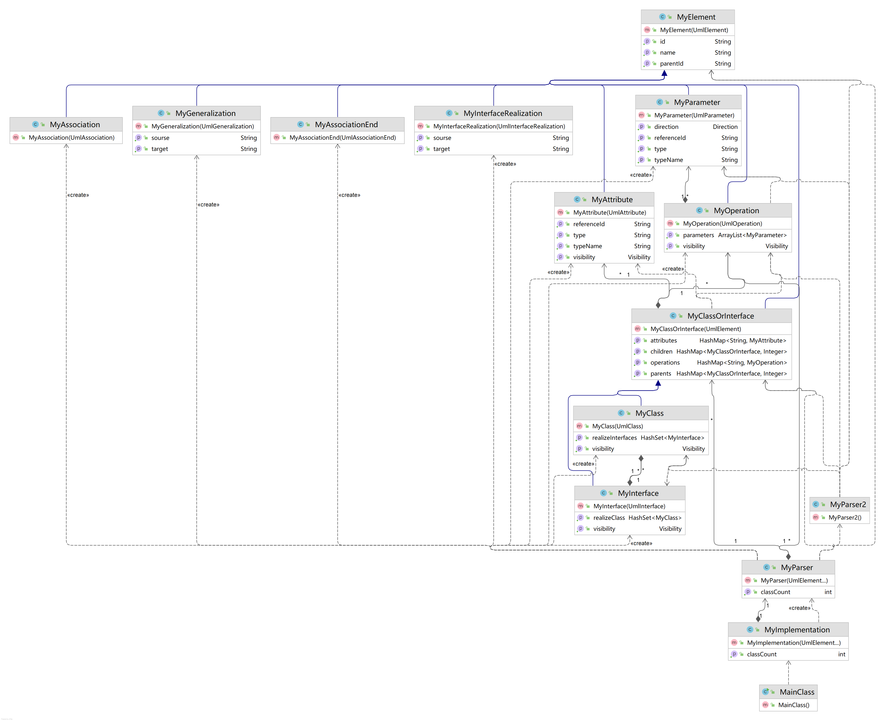

面向对象设计与构造第四单元第一次作业
UML 解析
题目
分析
本单元需要实现的是一个
UML解析器，实现对经过处理为特殊格式但保留主要信息的UML源码的解析本次作业要完成的是对
UML图中的类图的解析处理任务，需满足能够处理多种不同的对类图的信息进行查询的指令官方程序已实现基本字符串处理并且规定了要实现的接口，
AppRunner开启了解析线程，在run()函数中将储存UmlElement对象的容器作为参数传给了MyImplementation， 参数为处理后的UmlElement的各个子类相当于直接获得
UmlElement的各个子类元素并且配饰好了其属性的访问方法，直接使用与处理即可
基本思路
此单元作业重点在于对于
UML的各元素的处理，存储并构建好所有元素的数据结构，完整的保留原本的UML图中所包含的信息，并且通过合理的设计使其便于查询，查询方法只需在自己构建好的架构之下稍加拓展即可实现对各
UmlElement的各子类进行预处理，封装为对应继承MyElement的各子类，封装后能自主根据题目需求添加数据结构，满足题目的要求采用数据结构：树
原因：各
UML元素关系均为树状关系，类图的关系图如下
处理方法：层次化读入处理
原因：提供的
UmlElement的各子类是随机的，而按照树型结构建立模型的话，父、子结点之间关系的建立必须先有父结点，再有子结点，因此，按照父子节点的关系，将UmlElement的各子类按层次划分，按轮次处理，确保了建树过程中的自上而下建模的可行性第一轮处理：
UML_CLASS、UML_INTERFACE、UML_ASSOCIATION第二轮处理：
UML_ATTRIBUTE、UML_OPERATION、UML_ASSOCIATION_END、UML_GENERALIZATION第三轮处理：
UML_PARAMETER、UML_INTERFACE_REALIZATION
具体实现
总UML类图：

我的元素类
MyElement- 保存
UML元素的基本属性id，parentId，name并配置访问方法
- 保存
类图第一层元素
MyClass、MyInterface、MyAssociationMyClass、MyInterface：存储对应的visibility属性并配置访问方法
类图第二层元素
MyAttribute、MyOperation、MyAssociationEnd、MyGeneralzationMyAttribute：存储对应的visibility、type、referenceId、typeName属性并配置访问方法MyOperation： 存储对应的visibility属性并配置访问方法MyOperation： 存储了该类拥有的MyParameter，并配置了访问方法
类图第三层元素
MyParameter、MyInterfaceRealizationMyParameter： 存储对应的visibility、type、referenceId、direction属性并配置访问方法MyInterfaceRealization： 存储对应的source、target属性并配置访问方法
我的类与接口类
MyClassOrInterface- 由于类与接口有大多数相同的使用和属性之处，因此令
MyClass和MyInterface继承此类，此类继承MyElement - 使用
HashMap<MyClassOrInterface, Integer>储存该类 / 接口的所有父类（直接父类 / 间接父类）和所有子类（直接子类 / 间接子类），并且记录其到该类的继承深度 - 存储该类拥有的
MyAttributes和MyOperations，并配置了访问方法
- 由于类与接口有大多数相同的使用和属性之处，因此令
解析处理类
MyParser- 在此类完成三个层次的建模，并且完成题目要求实现的接口的具体算法实现，并且提供检查是否应该抛出异常的函数
- 在此类完成三个层次的建模，并且完成题目要求实现的接口的具体算法实现，并且提供检查是否应该抛出异常的函数
实现接口类
MyImplementation- 以
elements为参数创建MyParser实例，实现官方接口，调用对应函数检查及抛出异常，无异常则执行对应解析操作
- 以
by Tan